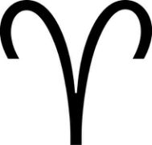
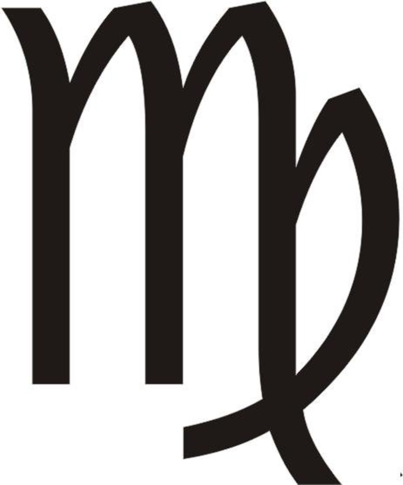
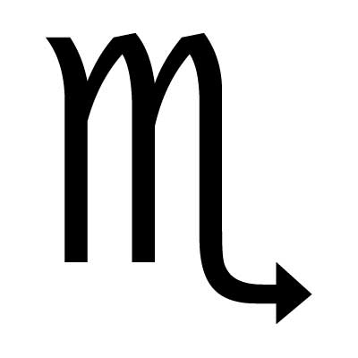
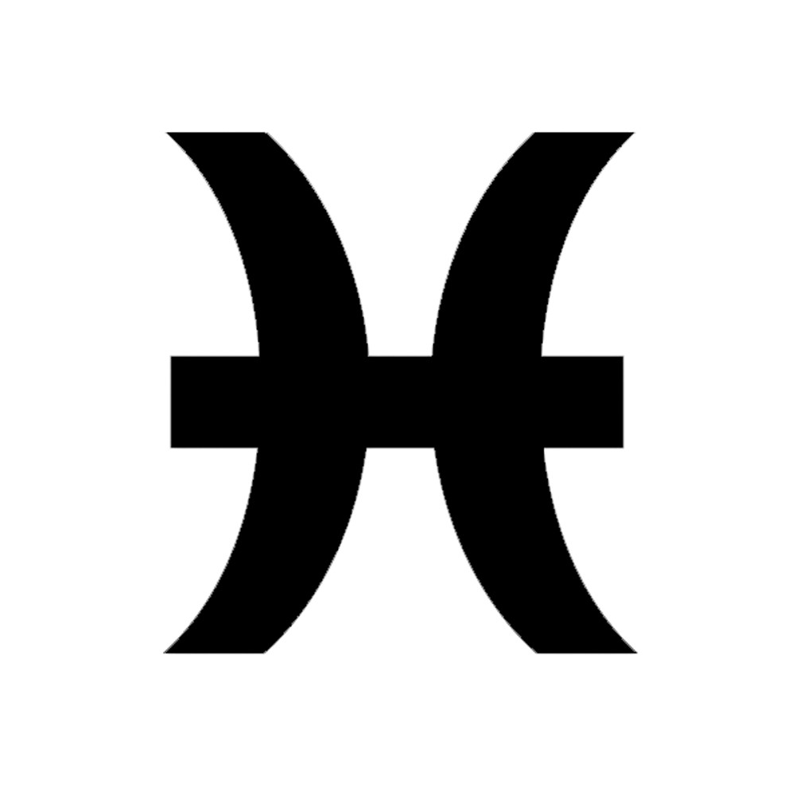
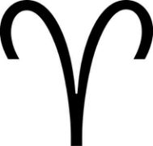
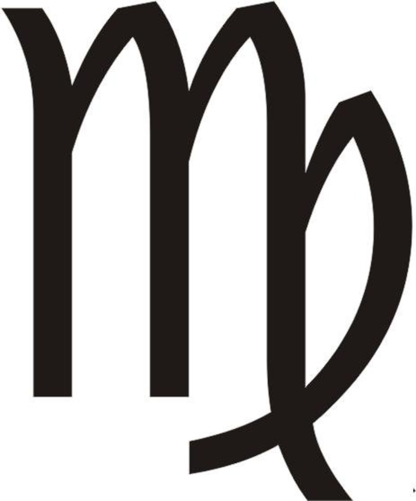
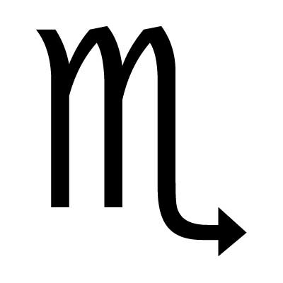
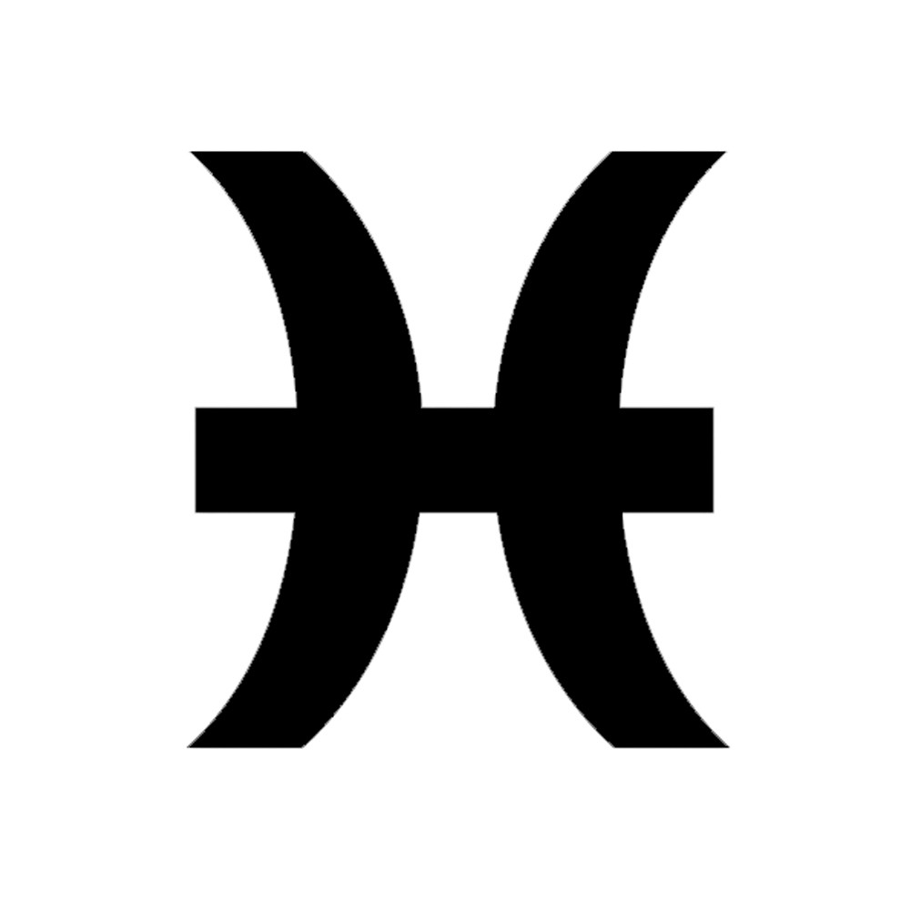

Horóscopo Noviembre

.jpg)
.jpg)
.jpg)
.jpg)

.jpg)

.jpg)
.jpg)
.jpg)

Horóscopo Noviembre |
|
|---|---|
| Aries  | Con el inicio de la trayectoria directa de Marte en Aries (13/11), los hijos e hijas del carnero se sentirán ganados a asumir riesgos inmediatos; sin embargo, para salir airosos, deberán hacer uso de la misma prudencia que los acompañó, durante la retrogradación del planeta guerrero. |
| Tauro | El 10 de noviembre, Mercurio reingresará en la Casa VII de Tauro, en trayectoria directa, por lo que tendrás la oportunidad de retomar conversaciones delicadas, con socio o pareja, explicando tu posición y respetando la opinión del otro. |
| Géminis | El eclipse penumbral de Luna Llena en Géminis del 30/11, supone un espacio para reflexionar sobre la coherencia en tus puntos de vista; la redefinición de las metas personales; el destierro de hábitos negativos; y cómo superar la superficialidad en el trato con terceros y la exploración de tus intereses. |
| Cáncer | En el ámbito profesional, el inicio de la trayectoria directa de Marte en la Casa X del cangrejo (13/11), indica que el sujeto está decidido a destacar en el campo laboral, aceptando una posición de liderazgo, impulsando una iniciativa, compitiendo por un cargo, o construyendo su propio emprendimiento. |
| Leo | Para los nativos de Leo, el eclipse penumbral de Luna Llena en Géminis del 30/11, apunta a cambios en el grupo de trabajo y el círculo social. Posiblemente, recibas un merecido reconocimiento, por tu aporte en un proyecto colectivo, que llega a su fin. Evita oponer resistencia y fluye con los acontecimientos. |
| Virgo  | La entrada de Ceres en la Casa VII de Virgo (09/11) sugiere que el sujeto tendrá especial interés en nutrir la relación con el compañero de vida, prestar atención a las necesidades del otro, e invertir en el avance de objetivos comunes. |
| Libra | El ingreso del asteroide Eros en Libra (18/11) resalta la importancia que tiene para el nativo la complicidad en las relaciones de pareja y negocios, no solo para cimentar la confianza entre los involucrados, sino para estimular los juegos de seducción. |
| Escorpión  | Venus hará su entrada el signo del aguijón, el 21/11, aumentando el aura de misterio que envuelve a los hijos e hijas del Escorpión. Asimismo, esta posición astrológica intensifica el carácter pasional del sujeto, lo que puede resultar contraproducente si se deja llevar por los celos y el deseo de posesión. |
| Sagitario | Con el ingreso del Sol en Sagitario (21/11), se incrementa el interés por descubrir nuevos espacios y abrazar la vida con optimismo. Específicamente para los nativos del signo del centauro, este tránsito alude a una mayor vitalidad física, y un mejor enfoque sobre cómo estructurar los objetivos personales. |
| Capricornio | La tercera y última conjunción entre Júpiter y Plutón en Capricornio, durante el 2020, tendrá lugar el 12 de noviembre. Para los hijos e hijas del signo de la cabra, esta alineación propone una ética renovada, la intención de crear un legado que trascienda, y conquistar nuevos escenarios. |
| Acuario | La llegada del Sol a la Casa XI de Acuario (21/11) apunta al inicio de importantes proyectos colectivos, o la inclusión en nuevos grupos de trabajo. Igualmente, esta posición astrológica favorece la materialización de los sueños, siempre y cuando estés trabajando por ello. |
| Piscis  | El inicio de la trayectoria directa de Neptuno en Piscis (28/11) propicia la inspiración espiritual, y el uso de la fantasía como catalizador del trabajo creativo, orientado a la ejecución de planes concretos. El nativo se aleja de las confusiones, y ofrece la cara al futuro con alegría y optimismo. |